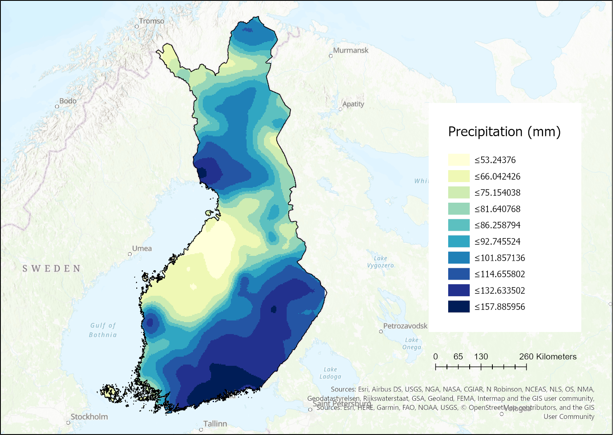
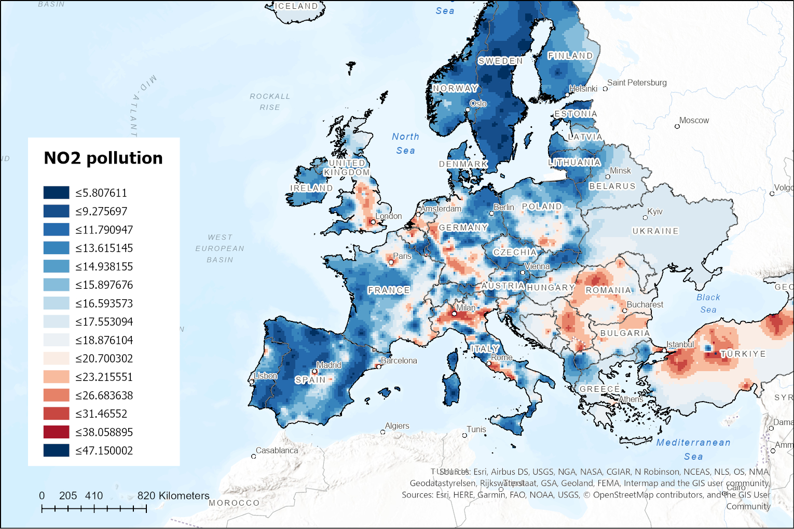

Geostatistics - precipitation and pollution
During my geostatistics course, I had the opportunity to work on a fascinating project that introduced me to the importance of interpolation methods and their practical applications. The project was divided into two parts: part A focused on monthly precipitation in Finland, and part B dealt with air pollutant concentrations in Europe.
For part A, I was given a raster dataset of monthly precipitation in Finland by the Finnish Meteorological Institute. My task was to analyze the spatial autocorrelation of the measurement data and then use appropriate interpolation methods to predict monthly precipitation in between the point locations. The aim was to create an interpolated surface that was similar to the original one. To complete this task, I used various tools such as spatial autocorrelation, kriging, and inverse distance weighting.
In part B, I was given a text-file of measurements on air pollutant concentrations in Europe by the European Environment Agency. The objective was to convert the point-wise measurements into continuous raster maps using interpolation methods of my choice. This task required me to analyze the properties of the spatial dataset and use interpolation to predict continuous surfaces based on point-wise measurements. I also learned how to import XY-data from a text-file and use base maps for reporting.
Interpolation is an essential tool for handling data in environmental studies, where measurements are taken at specific locations, but the spatial coverage is incomplete. Interpolation helps to estimate the values of the variables of interest in between the measurement points, which is crucial for mapping and monitoring environmental changes. In both parts of the project, interpolation was used to depict precipitation and pollution patterns across large areas, which allowed us to gain a better understanding of the dynamics of these environmental variables.
Overall, this project helped me develop a deeper understanding of geostatistics and the importance of interpolation in handling spatial data. I am now more confident in my ability to take on geostatistical analyses in my future work.